房山石經 第28冊
No.1084 健拏標訶一乘修行者秘密義記 (1卷)
【大香山隱士釋法藏述】
第 1 卷
健拏標訶一乘修行者秘密義記
法藏比丘者平壤新城人也其父早卒母孀育養年十四出家聡明好道遠向西方學道至於大香山其國不種五穀秖食大[卄/爪]其[卄/爪]大如七八斛甕其[卄/爪]肉肥香瓣甜如蜜其山之下多有眾僧冬夏安居彼眾之中有二比丘一名法鏡二名慧鏡此二比丘共對房戶而居法藏屈身請為弟子勤請三日依之即許奉事經月同宿一房其夜眠時法藏口中放光照於一房其師驚恠下席禮法藏足問從來方亦示問道所法藏辝別昇香山頂至於一所遇婆羅門問普賢菩薩住處婆羅門云此菩薩威德殊勝少有善根難可對見於是法藏知其婆羅門非常人請問法要婆羅門即為說真道婆羅門云眾生流轉生死所以不得真道誠由不識心源若識心源者捨邪執歸正道得佛果自在德於是法藏問云云何心源願樂為說婆羅門云此心萬德具足亦一切染具足染者謂不識心源萬德者謂識心源法藏云願不煩繁辤為說直詣真道婆羅門云其心源者所謂十二因緣迷斯故輪迴六道曉斯故解脫諸苦秖非解脫諸苦亦復顯佛果德所謂十二因緣者從無明乃至老死此理難決要緣事入理事者以筭五十四分為五分每分以十為所像四方中央復以四筭置閒成十二因緣一切諸法標十二因緣成故中央十筭抱四維以為心亦名輪以此數轉變成輪字誠標無住法也一切眾生以此無住法緣萬境執著諸法成塵沙染過一切賢聖以此無住法照萬境并泯心境以成自在德此名不增不減揔相法界法藏問若有揔相即可別相荅有別相云何別相所謂五相也五相者就五圓數每數取九似本數令成法界極至五數之謂也。
因借語諸佛子慎勿妄傳此法門甚深妙淺識者不能解若浪傳無智者縱雖令聞不善用故反招種種苦因不能離煩惱譬如群賊抄掠群牛既得牛已作是念惟彼大長者養育此牛不求乳酪唯為醍醐若得醍醐即得離眾病亦復得長壽色力於是群賊不具器物搆已盛以皮囊以器不善故外風為毒故攢搖不知故上不得醍醐下不能成酪漿由不得時故服即增眾咎如是愚人以不知故進增自病退益他病此法亦尒智者為甘露愚者不知故成毒藥諸佛子察聽譬如轉輪聖王有千輻輪寶將拒敵即成神劒輪將欲往遠方即成輕舉仙寶輪將壞破闇即成日月輪將欲衣食即雨衣食有遠方敵國恃穀米豐聖化不支即為霜雹災輪大王恚怒即為杖捶刀劒輪以要而言隨王心所念隨意隨成如是隨心所緣成六道內種種苦樂果亦復成無漏聖上下位分諸佛子反復而諦觀察此法深妙久未妄示諸佛秘藏除深信堅固親近善友質直無偽聽聞正法繫念思惟如說修行所得功德悉以迴向諸佛菩薩善知識處不生誹謗其餘眾生聞即驚疑增長眾苦遁墮惡道亦復身不諫口不諫意不諫遁墮惡道由是故未妄示譬如輪王有髻中寶珠直十不可說大千世界若王欲終壽命雖有信大臣既不委授要除王子人相具足若無王子人相具足即自飡消既不捨棄諸佛如來亦復如是除佛長子雖有餘善根眾生既不委授導師今可恡恡若非其器即塞口結舌既勿以利養名聞價法補身也。
詳夫諸佛立教此為令不著有名有相之法亦令不著無名無相之法而凡夫愚人說有著有說無著無隨聲取義馳走諸見譬如宂鼻駱駞無銜轡駒為是諸佛如來有別方便以為捨偏執著拔邪見芒於無名相之法立名相說假名不妨真名故不破假名說諸法實相實名不捨假名故實際不動建立諸法諸佛如來所謂異方便三界九地貪瞋癡配無所起而彼愚人為令捨偏見在於一心貪瞋癡配置九地是乃於無所有假施造而建立也又所得果滿融一味而為引彼人建假名果隨其勝地建立自受用果又移此人為安置大地建立無勝世界等不可說蓮花座上果又此人雖得佛果廣大未免名相故移此人安置一念不生法界之宅又此人雖免名相未達因陁羅微細等滿融道理故移此人令滿足重重無盡等十門揔詳終始雖有此說一乘所詮未達故▆證知所詮上從諸佛下至蠕識令知一法界大揔相所謂意識一剎那不著境界無礙無相得解脫如一剎那諸剎那亦如是於已上諸教雖有末那黎耶等種種諸說並是因義於一意識分別而說揔在此中以一此治末那黎耶若觀次第以末那治意識以黎耶治末那以真如治黎耶以無住治真如無住無所住故不可治離過得自在功德及解脫亦如前說今所述者從首至末皆不動凡夫身得無礙身勿輕妄怠濫矣。
歸命十身無身身 解脫法輪無心心
普賢文殊等海會 法界願行無行行
唯願大日光明尊 身雲普現遍法界
示現一切諸菩薩 雨寶莊嚴智慧身
健拏標訶一乘修行者秘密義記
若夫圓融國土海汪洋無崖差別世界海宏深不測今且毗盧遮那本願力故普賢菩薩因力故開法界門示現揔別顯同異體有緣開導也。
揔相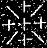
法界門者此即圓融門即同體門即同時具足門又從揔相法界流出五別相法界更流入揔相法界譬如大海四天下洲中潛流為種種小河更流入大海雖有往復然動靜一源如是諸法不壞本位而成別不即而成揔成壞增減准以可知此即大增大減此即體用具門又揔相即能流法界別相即所流法界。
別相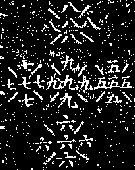
此即行布門即異體門即緣起十門中除同時具足門餘九門此即所流法界此五華藏除揔相由逆順故成十花藏莊嚴世界上來揔此諸法體門。
白蓮藏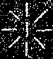
赤蓮藏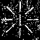
五葉蓮赤色此中有四種摩尼寶一者月藏二者日藏三者萎花寶四者寶淨又或云全普光摩尼寶是乃凡夫時法佛所住宮其宮名日藏摩尼普照十方殿師子座号圓明摩尼師子座住此中非色非心非因果法無變異常住業轉現性相皆有此中遇緣即動轉不當根手用發業相說此即殊勝威光藏風輪所持普光摩尼莊嚴香水海中▆▆光明蘂香幢蓮華此蓮眾香為蘂蘂▆▆▆▆放▆▆相雲降魔王外道故名幢又獨名師子座不名餘類座者唯師子縱橫走巧便故獨名師子座良以此心退盡前際進盡未來際現在不住如師子遊戲故師子為喻。
青蓮藏
八葉蓮青色圓明當中安住理亦遍十方此花者香幢中輪圍地當中無邊妙花光香水海中花說幢如前。
黃蓮藏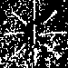
一葉蓮黃色清淨寶網羅為其葉弥覆虛空成熟萬物圓明如前說幢相亦尒。
黑蓮藏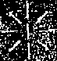
八葉蓮黑色正二段合為八葉此花光明普照十方常寂常寂而照十方寂用無礙而常如言說絕心緣滅上來五大色蓮座此是大日尊所住處蓮座說訖今所說五番法界體顯用隱但就體略去枝條一一界中歸真即成佛字迷真即成毒字然雖成佛不增雖成毒不減故云不增不減此是順生滅門言耳若約實者應有真如生滅二門又舉一即具一切上來諸所說此即體具德自在門。
緣起法界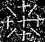
此增減以顯不增減所以明此相者諸緣起法一動一切動而本位不動故去偏執見令見圓融道理故又減數一十六錢以此錢從減數成不減二字又以此錢從增數但成增一字已入增數已攬四維錢以成不字是即理事不增減又十九之四番減錢能成不增不減字體此即圓教一乘亦名根本法輪八七之三番減錢雖不能成字體理亦不增不減此中深破三乘故名別教一乘亦名攝末歸本法輪六五之二番減錢不成字體如前理亦當有此中深破二乘名三中大乘亦名支末法輪此三種輪攝盡法相故不別釋。
緣起陁羅尼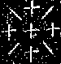
上方體著五摩尼雨光明避眾難若不善用致眾苦左右方各五摩尼雨衣食諸珎寶供一切人若不善用致苦亦尒下方各五摩尼雨寶如前招善惡果亦尒理實通融無礙一中具一切此即支末因陁羅。
緣起陁羅尼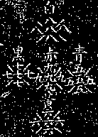
譬如因陁羅體德備五珠一為本法攝餘四珠如舉一為本法餘四隨舉為本法亦如是又白珠中餘四現及本白影影又影現如白珠現影中又影現一切珠亦如是如是重重重重重重重重重重無盡無盡無盡無盡無盡無盡無盡無盡無盡無盡不可具說又諸眾生所造作業影現善惡無記現又無漏聖人所證因果上中下位分於中皆具現如天珠中現一切宮殿樓閣柱楹梠桷現亦如是是時諸天見此事已深起慈悲心救護心三業中不作惡心三業中勤行精進心且時不起放逸心又此五色珠中隨眾生業影現白中天清淨業現赤中無記業現青中餓鬼畜生業現黃中人間種種輪轉不相捨離世善業現黑中地獄種種苦業現以要而言諸天此沒善道惡道中生得聖果遠近乃至諸菩薩得道坐道場樹王下降魔軍轉法輪劫住遠近入涅盤流布舍利皆於中現心等五色珠因陁羅網亦如是於中有業識細相轉識中相現識麤相目見可貪色時眼脉走黃黃熏隨色摩尼黃色現是名貪業現五道業作目見可瞋色時目脉走青青熏隨色摩尼青色現是名瞋業現五道業作目見可善可惡不識不知色時目脉走黑黑熏隨色摩尼黑色現是名癡業現五道業作純白色此諸天業現表以可知約實而言一一業中具一切如是重重無盡不可具說是即德用自在門此諸業用業轉二相秘密難知佛菩薩境界現相相現凡夫境界根[牙-(必-心)+一]用等一切法意此中在是即根本因陁羅。
若夫教海鏗宏真源眇[目*曼]二鳥經空不見其邊三獸渡河不識其底然則高德聲聞受聾盲稱積功菩薩見假者名但以機緣塵沙教網森羅境智一味混能所相寂用無方眇眇叵測於是無相大日照揔法界現像萬差無住大輪轉別相界無住示住是故揔相法界光明羅網照臨山王令階佛境然後化流別相攝末歸本推其相也平等而常差別觀其理也差別而常平等
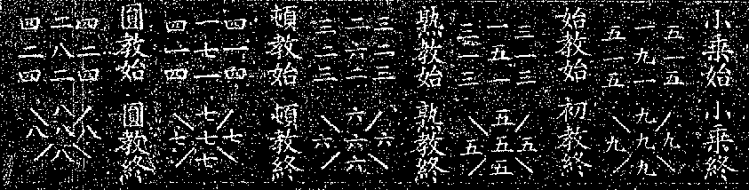
竊見古今立教雖有塵沙今且就五教以顯其義也五教者從教主得名初生身化身即穢土佛是也即止心花也二自受用身即色究竟處佛是也即止肝花也三寶王性身即他受用身是也即止脾花也即無勝世界佛是也四阿閦佛即不動佛妙喜世界佛是也即止腎花也五盧舍那佛即蓮花臺藏世界佛是也即止肺花也此五教約實而言其唯一圓音何以故小乘始終初教始終熟教始終頓教始終圓教始終小乘終即初教始如小乘初教其餘教始終亦尒手相鈎鏁以成一音約此而言由一音故非五別由應機異故非一音(此有為法界中教門)。
若依無為法界亦有五教一因緣揔相為破外道自然執故說一切諸法因緣生即小乘始因緣無常即小乘終此教中許悉達一人成不許餘人成二始教此教中因緣無常是始教始雖因緣無常猶由知少分有佛性故以此為始教終此教中許一分有性定性無性俱不成故未盡大乘法理故立為大乘始教三熟教此教中佛性常住不問有性無性凡有心悉當成佛盡大乘至極之說立為熟教然上二教並依位階漸次修行成俱名漸教四頓教此教中動想生心皆此虛妄無所有分別一切諸法無名無相離言絕慮一切諸法本來寂滅以為此教體故立為頓教五圓教此教中盛明一位即一切位一切位即一位一断即一切断一切断即一断無住無我普賢法界帝網重重主伴具足故名圓教其餘義理如別記說又此經七處九會心地有五餘地各一又此經所立二十二位心地有十八肝地一脾地一腎地一肺地一六道十信等妙(已上心)解(肝)行(脾)迴向(腎)十地(肺)五位亦尒准以可知(此唯有相法界門中位也)若無相行位今日一剎那中所起菩提心普攝諸位如一剎那一切剎那亦尒如是展轉歷位皆尒乃至等妙此法門即前後而即無前後前後即行布無前後即圓融上來一切諸說雖段數多其義在此也。
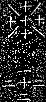(以十八錢轉變成輪字諸經所說無住義准以可知又十八具者即輪義)。
無住大輪方廣周遍法界無邊輪迴微細三世無息今且舉大綱而略論其狀有二種輪其二是何一者生死輪二者涅盤輪所轉輪二故能轉人亦有四種其四是何一者凡夫二者二乘三者菩薩四者一切諸佛此上二輪本來是一而由逆順故成二又此上四種人本來是一而由行次第成四亦得名由因果成四生死輪者凡夫所轉涅盤輪者二乘所轉少分生死全分涅盤菩薩所轉全生死全涅盤一時齊轉諸佛所轉無住故凡夫不知所有方廣故二乘不見其邊微細故菩薩未能究竟無息故諸佛住無住大地若廣明無住相如花嚴三寶義說上來雖有二種差別揔大毗盧遮那所住處。
計二百六十五字
正證法界印
六百七十六字
離─必─苦─隨─入─令─向─果─以─要─而─言─四─威─儀─所─作─事─業─准─此─行─大─士─度─生
│ │
捨 虛─盡─界─法─遍─周─盡─窮─無─種─種─是 由─體─身─法─相─無─非─莫─情─無─有─言 欲
│ │ │ │ │ │
不 空 數─其─餘─身─分─亦─如─是─周─盡 如 此 生─無─有─罪─一─切─眾─生─妄─想 而 鉤
│ │ │ │ │ │ │ │ │ │
果 如 量 無─中─身─一─一─養─供─設 法 是 一 煞 以─情─無─覺─正─得─想─妄 故 實 引
│ │ │ │ │ │ │ │ │ │ │ │ │ │
佛 是 無 量 聲─聞─前─此─身─普─現 界 如 切 日 地─為─所─依─是─故─地 改 自 約 後
│ │ │ │ │ │ │ │ │ │ │ │ │ │
至 無 具 手 薩 己─及─佛─諸─眾─聖─供 亦 有 終─我─人─非─道─得─令 中 不 身 ▆ 為
│ │ │ │ │ │ │ │ │ │ │ │ │ │
乃 盡 供 一 菩 無 在─國─土─身─分─塵─中 無─情─皆─至─處─動─至 為 置 悟 世 根 說
│ │ │ │ │ │ │ │ │ │ │ │ │ │
行 國 手 一 佛 分 中 出─孔─毛─一─一─息─氣─齶─上─置─舌─舉 處 是 根 覺 界 置 法
│ │ │ │ │ │ │ │ │ │ │ │ │ │ │ │
所 土 如 手 若 別 雲 充 是─故─普─賢─為─演─說─一─切─眾 坐 至 如 ▆ 能 覆 中 離
│ │ │ │ │ │ │ │ │ │ │ │ │ │ │ │ │ │
無 中 量 中 間 若 一 滿 現 覺─正─便─時─心─發─初─場 生 端 寂 亦 有 位 不 空 生
│ │ │ │ │ │ │ │ │ │ │ │ │ │ │ │ │ │ │ │
行 於 無─具 世 眾 一 法 轉 苦 身─不─由─他─屆─普─眼 心 心 法 事 情 識 知 故 死
│ │ │ │ │ │ │ │ │ │ │ │ │ │ │ │ │ │
其 中─充─滿─三 生 空 界 業 樂 大─廣─界─境─眼─普─坐─臺 身 分 諸 以 反─若 是 如
│ │ │ │ │ │ │ │ │ │ │ │
隨─示─類─其─隨─前 虛 盡 差 平─等─一─味─佛─修─習─止─觀─正 別 餘 空─為─所─依 欲
│ │ │ │ │ │
說─雲─周─遍─法─界─盡 虛 萬 嘿 佛─為─名─動─不─來─舊─生─眾─名 其─法─道─入─引─鉤
│ │ │ │
言 ▆─中─空─虛─雲─無 空 浪 囑 此─法─秘─密─難─思─議─證 日─住─處─五─內─此─是─心
│ │ │ │ │ │ │ │ │ │
生 尒 雲─瓔─珞─雲 如 復 波 佛 相─名─無─滿─圓─身─十 智 大 乾─如─空─來─舊─相 所
│ │ │ │ │ │ │ │ │ │ │ │ │ │
眾 起 衣 利─自 種 譬 更 緣 子─法─佛─常─住─遍─法─界 所 想 達 明─遍─照─盡 身 止
│ │ │ │ │ │ │ │ │ │ │ │ │ │ │ │
切 雲 香 利 界 種 身 至 風─依─海─藏─來─如─境─餘─非─知 後 婆 光 大─廣 虛 此 心
│ │ │ │ │ │ │ │ │ │ │ │ │ │ │ │
一 滿 塗 他 法 花 此 本─所─出─處─如─是─往─復─至─數─迴─已 城 中 用 那 空 復 性
│ │ │ │ │ │ │ │ │ │ │ │ │ │
雲 虛 雲 成 遍 嚴 作─行─觀─起─止─已─空─畢─摩─護─身─此─化─幻 孔 導 遮 是 礙 名
│ │ │ │ │ │ │ │ │ │ │ │
遮 空 尼 主 現 身─具─雲─一─切─眾─生─形 中─住─在─此─身─一─一─毛 師 盧 光 障 為
│ │ │ │ │ │ │ │ │ │ │ │
欄 天 摩 伴 普─雲─慈─相─無─雖─身─法 類 臆 觀─學─始─道─一─非─便─方 毗 明 無 普
│ │ │ │ │ │ │ │ │ │ │ │
網 雨 香 不─由─他─教─成─大─用─此 是 雲 胸 日 我─悉─皆─本─尊─所─出─光 相 界 眼
│ │ │ │ │ │ │ │ │ │ │ │
羅 下 量─無─出─中─孔─毛─一─一─身 如 山 子 月 神─非─執─所─道─外─心─色─非 法 境
│ │ │ │ │ │ │ │
▆ 澍─生─萬─物─萬─物─滋─茂─成─花─果 林 師 空─懸─此─光─現─前─見─十─方─普─觀 或
│ │ │ │
▆─雲─殿─宮─草─藥─切─一─雲─木─樹─沼─河 者─尊─本─日─大─名─或─體─身─法─性─法─名
彼證光明相好身 平等無二大日味
三種世間為身心 咸共行入普法門
健拏標訶一乘修行者秘密義記 終 十二紙